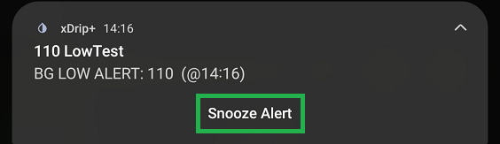
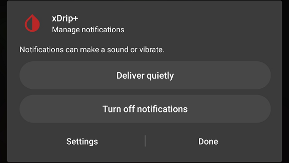
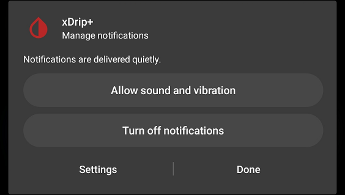

Alarms and Alerts


Many alerts can be setup with xDrip+.
It is recommended to enable at least three alerts if xDrip+ is your only glucose monitoring app:
- Low alert
- High Alert
- Missed readings alert
Glucose Level Alerts List⌁
By default, one low and one high alert are defined.
Low alerts will trigger when BG is equal or below the alert value, high alerts when BG is equal or above.
To create a new alert, touch the CREATE LOW or HIGH ALERT title bar.
To modify an existing alert, long touch the alert
- You can name an alert the name you want, as long as no other alert has the same name
- The threshold is the BG level that will trigger the alarm, only one alarm can use this value
- Default snooze is the delay that will be proposed when snoozing
- The alarm will trigger again every x minutes if not acknowledged
You can customize the alert sound: touch CHOOSE FILE
System sound will allow you to choose from your phone ringtones, custom sound allows you to pick your sound/music and xDrip default sound uses the app default.
By default the alarm will be setup for the whole day.
If you unselect the checkbox you can customize activity hours (when to enable it).
- You can disable the alarm (uncheck) when the phone is in silent mode (not recommended)
- Force speaker will make the alarm sound on the phone even when you're using other speakers (like bluetooth)
- Vibrate enables phone vibration
- Disable alert completely disables it, it will show crossed in the Alert List
TEST ALERT will make this alert sound
SAVE ALERT will save this new or modified alert
REMOVE ALERT will delete this alert
SNOOZE ALERT BEFORE IT FIRES will allow you to avoid the alert to trigger, for example if you already treated an expected low or a high and know BG will move anyway you can avoid to hear the alarm for the time you want.
Glucose Alerts Settings⌁
Alert volume settings⌁
You can customize the volume of your alerts
Ascending volume is recommended if you don't want the alarm to blare immediately (useful during the night).
Audio Focus⌁
Audio Focus allows you to decide how to handle other sounds when an xDrip+ alarm or alert triggers.

You can automatically lower the volume, pause the other apps playing sounds (like media players) or pause all other sounds in order to better focus on xDrip+ sound.
Smart snoozing⌁
Smart alerting⌁
Smart snoozing and alerting avoid the alert to trigger or re-raise if BG is going in the right direction (upwards for low alerts and downwards for highs)

Don't alarm during phone calls⌁
Alarms will not sound if they trigger during a phone call.
Buttons silence alarms⌁
Button silence alarms is a quick way to snooze alarms by just pressing volume up or down.
Alert buttons⌁
Alert button will add an action button in the drop down view of the alert.



Start snoozed⌁
Start snoozed applies the snooze delay before triggering the alarm. Make sure the Default snooze delay is appropriate in the alarm.
Wake Screen⌁
Wake up screen during alerts.
Use Camera Light⌁
Flash the back camera light during alerts (when the phone is in charge).
Glucose Level Alert List⌁
You can add a additional line to Glucose Level Alert List in the main menu.
Suppress alerts if missed readings⌁
Level alerts remain active even if there is no signal (sensor change for example, or follower without network). This option allows you to suppress them. Make sure you have a missed alert enabled if you use this feature.
Suppress snoozed and active alerts⌁
You can also suppress alerts after a certain amount of time, make sure this is really what you want.
Notification channel⌁
With Android 8 and above you can use the notification channels for your alerts. This will allow you to customize notifications at Android level.
In order to setup this feature, go to Android Settings / Notifications / Apps / xDrip+ and allow sound and vibration.
You'll then be able to decide each notification behaviour. If you have multiple notification and alarms, disable the unwanted ones here.
Delay ascending volume⌁
You can delay the start of the ascending volume alert without delaying vibration that will start as soon as the alert is triggered.
Calibration Alerts⌁
If your sensor requires periodic calibration you can setup xDrip+ to alert you when calibration is due.
You can setup the period between calibrations, sound to be played, ...

Initial alert⌁
Initial calibration alert is used when starting a sensor requiring initial calibration, it will trigger when enough readings are available to calibrate.
Missed Reading Alert⌁
When relying on xDrip+ to alert you for lows and highs, it is essential to make sure that it is actually receiving BG readings. For this, if you don't have any other alarms enable this feature for your safety.
Setup is similar to glucose level alerts. The alarm sound has to be defined in Other Alerts (See below). In order to test it put your phone in airplane mode until it triggers.
Other Alerts⌁
If you enabled this feature and your sensor supports it, you can setup an alert for noisy readings.
Falling or rising BG⌁
You can also setup alerts for fast BG changes.
Alert preferences⌁
The alerts above and also Missed Readings use the sound defined below.
Some recent Android versions do not ring it unless you use Notification channels.
Extra Alerts⌁
Persistent high⌁
Instead of a high alert that will trigger as soon as BG reaches the trigger value, you can setup a persistent high alert that will only trigger when BG remains above the setup value for more than a certain time.
Forecasted low⌁
You can set an alarm on forecasted low value. This feature will use the momentum (extrapolation of the current BG trend) and not the prediction settings. Forecasted low (min) is the time in which a low will be forecasted (the one that usually displays in yellow on the graph screen).
In the example below if you set Alarm at forecasted low (min) to 50 minutes, il will trigger. The red dotted line is the forecasted BG trend, extrapolated from the previous measurements.
Other xDrip+ alerts⌁
Some extra alerts are available.
Battery alerts are available if your bridge sends this information to xDrip+.

Sensor expiry alerts⌁
Enable a notification when the sensor is close to expiry time.
Snooze Alert⌁
If there is no active alert, you can pre-snooze alerts from this menu so that they won't trigger for a certain time.
You will be proposed a default snooze period.
If an alert triggers you will see the notification in your phone drop down panel, and eventually hear the sound.
You can snooze the alert swiping the notification, you can customize it further tapping it.
You can access the snooze menu by touching the notification or from xDrip+ main menu, snooze alert.
At this point, the snooze menu will also display the active alert.
Touching snooze will snooze it for the period selected.
ALL ALERTS CURRENTLY DISABLED⌁
If you pre-snooze (disable) all alerts, you will see this warning message.
To remove it you need to re-enable alerts.
Visible alert notification⌁
Available for Android 8 and above.
When an alert triggers you will see it in the notifications drop down panel.

Swiping it will snooze it, touching it will open a preferences menu.
Deliver quietly will remove notifications channel sound and vibration.

You can restore it with allow sound and vibration with the notifications channel.

Settings will drive you to your phone notifications setup settings.

You can also completely turn off notifications channel for xDrip+.